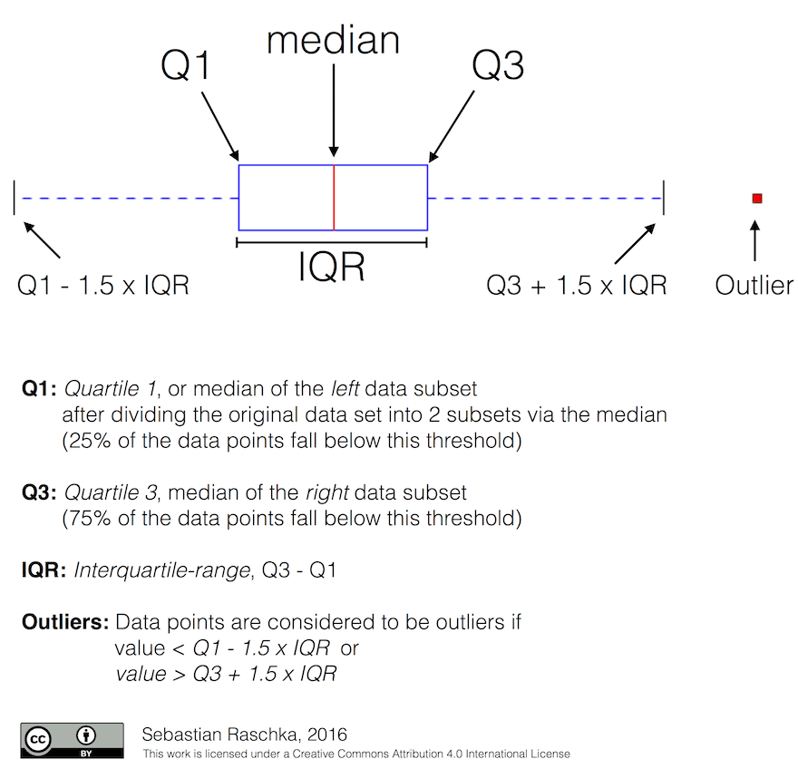

A Brief Introduction to Statistics and Probability
Statistics and Probability Theory are two highly related areas of Mathematics that are highly relevant to Data Science. It is possible to operate with data without deep knowledge of mathematics, but it is still better to know at least some basic concepts. Here we will present a short introduction that will help you get started.
Probability and Random Variables
Probability is a number between 0 and 1 that expresses how probable an event is. It is defined as a number of positive outcomes (that lead to the event), divided by total number of outcomes, given that all outcomes are equally probable. For example, when we roll a dice, the probability that we get an even number is 3/6 = 0.5.
When we talk about events, we use random variables. For example, the random variable that represents a number obtained when rolling a dice would take values from 1 to 6. Set of numbers from 1 to 6 is called sample space. We can talk about the probability of a random variable taking a certain value, for example P(X=3)=1/6.
The random variable in previous example is called discrete, because it has a countable sample space, i.e. there are separate values that can be enumerated. There are cases when sample space is a range of real numbers, or the whole set of real numbers. Such variables are called continuous. A good example is the time when the bus arrives.
Probability Distribution
In the case of discrete random variables, it is easy to describe the probability of each event by a function P(X). For each value s from sample space S it will give a number from 0 to 1, such that the sum of all values of P(X=s) for all events would be 1.
The most well-known discrete distribution is uniform distribution, in which there is a sample space of N elements, with equal probability of 1/N for each of them.
It is more difficult to describe the probability distribution of a continuous variable, with values drawn from some interval [a,b], or the whole set of real numbers ℝ. Consider the case of bus arrival time. In fact, for each exact arrival time t, the probability of a bus arriving at exactly that time is 0!
Now you know that events with 0 probability happen, and very often! At least each time when the bus arrives!
We can only talk about the probability of a variable falling in a given interval of values, eg. P(t1≤X<t2). In this case, probability distribution is described by a probability density function p(x), such that

A continuous analog of uniform distribution is called continuous uniform, which is defined on a finite interval. A probability that the value X falls into an interval of length l is proportional to l, and rises up to 1.
Another important distribution is normal distribution, which we will talk about in more detail below.
Mean, Variance and Standard Deviation
Suppose we draw a sequence of n samples of a random variable X: x1, x2, …, xn. We can define mean (or arithmetic average) value of the sequence in the traditional way as (x1+x2+xn)/n. As we grow the size of the sample (i.e. take the limit with n→∞), we will obtain the mean (also called expectation) of the distribution. We will denote expectation by E(x).
It can be demonstrated that for any discrete distribution with values {x1, x2, …, xN} and corresponding probabilities p1, p2, …, pN, the expectation would equal to E(X)=x1p1+x2p2+…+xNpN.
To identify how far the values are spread, we can compute the variance σ2 = ∑(xi - μ)2/n, where μ is the mean of the sequence. The value σ is called standard deviation, and σ2 is called a variance.
Mode, Median and Quartiles
Sometimes, mean does not adequately represent the “typical” value for data. For example, when there are a few extreme values that are completely out of range, they can affect the mean. Another good indication is a median, a value such that half of data points are lower than it, and another half - higher.
To help us understand the distribution of data, it is helpful to talk about quartiles:
- First quartile, or Q1, is a value, such that 25% of the data fall below it
- Third quartile, or Q3, is a value that 75% of the data fall below it
Graphically we can represent relationship between median and quartiles in a diagram called the box plot:

Here we also compute inter-quartile range IQR=Q3-Q1, and so-called outliers - values, that lie outside the boundaries [Q1-1.5IQR,Q3+1.5IQR].
For finite distribution that contains a small number of possible values, a good “typical” value is the one that appears the most frequently, which is called mode. It is often applied to categorical data, such as colors. Consider a situation when we have two groups of people - some that strongly prefer red, and others who prefer blue. If we code colors by numbers, the mean value for a favorite color would be somewhere in the orange-green spectrum, which does not indicate the actual preference on neither group. However, the mode would be either one of the colors, or both colors, if the number of people voting for them is equal (in this case we call the sample multimodal).
Real-world Data
When we analyze data from real life, they often are not random variables as such, in a sense that we do not perform experiments with unknown result. For example, consider a team of baseball players, and their body data, such as height, weight and age. Those numbers are not exactly random, but we can still apply the same mathematical concepts. For example, a sequence of people’s weights can be considered to be a sequence of values drawn from some random variable. Below is the sequence of weights of actual baseball players from Major League Baseball, taken from this dataset (for your convenience, only first 20 values are shown):
[180.0, 215.0, 210.0, 210.0, 188.0, 176.0, 209.0, 200.0, 231.0, 180.0, 188.0, 180.0, 185.0, 160.0, 180.0, 185.0, 197.0, 189.0, 185.0, 219.0]
Note: To see the example of working with this dataset, have a look at the accompanying notebook. There are also a number of challenges throughout this lesson, and you may complete them by adding some code to that notebook. If you are not sure how to operate on data, do not worry - we will come back to working with data using Python at a later time.
Here is the box plot showing mean, median and quartiles for our data:

Since our data contains information about different player roles, we can also do the box plot by role - it will allow us to get the idea on how parameters values differ across roles. This time we will consider height:

This diagram suggests that, on average, height of first basemen is higher that height of second basemen. Later in this lesson we will learn how we can test this hypothesis more formally, and how to demonstrate that our data is statistically significant to show that.
When working with real-world data, we assume that all data points are samples drawn from some probability distribution. This assumption allows us to apply machine learning techniques and build working predictive models.
To see what the distribution of our data is, we can plot a graph called a histogram. X-axis would contain a number of different weight intervals (so-called bins), and the vertical axis would show the number of times our random variable sample was inside a given interval.

From this histogram you can see that all values are centered around certain mean weight, and the further we go from that weight - the fewer weights of that value are encountered. I.e., it is very improbable that the weight of a baseball player would be very different from the mean weight. Variance of weights show the extent to which weights are likely to differ from the mean.
If we take weights of other people, not from the baseball league, the distribution is likely to be different. However, the shape of the distribution will be the same, but mean and variance would change. So, if we train our model on baseball players, it is likely to give wrong results when applied to students of a university, because the underlying distribution is different.
Normal Distribution
The distribution of weights that we have seen above is very typical, and many measurements from real world follow the same type of distribution, but with different mean and variance. This distribution is called normal distribution, and it plays a very important role in statistics.
Using normal distribution is a correct way to generate random weights of potential baseball players. Once we know mean weight mean and standard deviation std, we can generate 1000 weight samples in the following way:
samples = np.random.normal(mean,std,1000)
If we plot the histogram of the generated samples we will see the picture very similar to the one shown above. And if we increase the number of samples and the number of bins, we can generate a picture of a normal distribution that is more close to ideal:

Normal Distribution with mean=0 and std.dev=1
Confidence Intervals
When we talk about weights of baseball players, we assume that there is certain random variable W that corresponds to ideal probability distribution of weights of all baseball players (so-called population). Our sequence of weights corresponds to a subset of all baseball players that we call sample. An interesting question is, can we know the parameters of distribution of W, i.e. mean and variance of the population?
The easiest answer would be to calculate mean and variance of our sample. However, it could happen that our random sample does not accurately represent complete population. Thus it makes sense to talk about confidence interval.
Confidence interval is the estimation of true mean of the population given our sample, which is accurate is a certain probability (or level of confidence).
Suppose we have a sample X1, …, Xn from our distribution. Each time we draw a sample from our distribution, we would end up with different mean value μ. Thus μ can be considered to be a random variable. A confidence interval with confidence p is a pair of values (Lp,Rp), such that P(Lp≤μ≤Rp) = p, i.e. a probability of measured mean value falling within the interval equals to p.
It does beyond our short intro to discuss in detail how those confidence intervals are calculated. Some more details can be found on Wikipedia. In short, we define the distribution of computed sample mean relative to the true mean of the population, which is called student distribution.
Interesting fact: Student distribution is named after mathematician William Sealy Gosset, who published his paper under the pseudonym “Student”. He worked in the Guinness brewery, and, according to one of the versions, his employer did not want general public to know that they were using statistical tests to determine the quality of raw materials.
If we want to estimate the mean μ of our population with confidence p, we need to take (1-p)/2-th percentile of a Student distribution A, which can either be taken from tables, or computer using some built-in functions of statistical software (eg. Python, R, etc.). Then the interval for μ would be given by X±A*D/√n, where X is the obtained mean of the sample, D is the standard deviation.
Note: We also omit the discussion of an important concept of degrees of freedom, which is important in relation to Student distribution. You can refer to more complete books on statistics to understand this concept deeper.
An example of calculating confidence interval for weights and heights is given in the accompanying notebooks.
| p | Weight mean |
|---|---|
| 0.85 | 201.73±0.94 |
| 0.90 | 201.73±1.08 |
| 0.95 | 201.73±1.28 |
Notice that the higher is the confidence probability, the wider is the confidence interval.
Hypothesis Testing
In our baseball players dataset, there are different player roles, that can be summarized below (look at the accompanying notebook to see how this table can be calculated):
| Role | Height | Weight | Count |
|---|---|---|---|
| Catcher | 72.723684 | 204.328947 | 76 |
| Designated_Hitter | 74.222222 | 220.888889 | 18 |
| First_Baseman | 74.000000 | 213.109091 | 55 |
| Outfielder | 73.010309 | 199.113402 | 194 |
| Relief_Pitcher | 74.374603 | 203.517460 | 315 |
| Second_Baseman | 71.362069 | 184.344828 | 58 |
| Shortstop | 71.903846 | 182.923077 | 52 |
| Starting_Pitcher | 74.719457 | 205.163636 | 221 |
| Third_Baseman | 73.044444 | 200.955556 | 45 |
We can notice that the mean heights of first basemen is higher than that of second basemen. Thus, we may be tempted to conclude that first basemen are higher than second basemen.
This statement is called a hypothesis, because we do not know whether the fact is actually true or not.
However, it is not always obvious whether we can make this conclusion. From the discussion above we know that each mean has an associated confidence interval, and thus this difference can just be a statistical error. We need some more formal way to test our hypothesis.
Let’s compute confidence intervals separately for heights of first and second basemen:
| Confidence | First Basemen | Second Basemen |
|---|---|---|
| 0.85 | 73.62..74.38 | 71.04..71.69 |
| 0.90 | 73.56..74.44 | 70.99..71.73 |
| 0.95 | 73.47..74.53 | 70.92..71.81 |
We can see that under no confidence the intervals overlap. That proves our hypothesis that first basemen are higher than second basemen.
More formally, the problem we are solving is to see if two probability distributions are the same, or at least have the same parameters. Depending on the distribution, we need to use different tests for that. If we know that our distributions are normal, we can apply Student t-test.
In Student t-test, we compute so-called t-value, which indicates the difference between means, taking into account the variance. It is demonstrated that t-value follows student distribution, which allows us to get the threshold value for a given confidence level p (this can be computed, or looked up in the numerical tables). We then compare t-value to this threshold to approve or reject the hypothesis.
In Python, we can use the SciPy package, which includes ttest_ind function (in addition to many other useful statistical functions!). It computes the t-value for us, and also does the reverse lookup of confidence p-value, so that we can just look at the confidence to draw the conclusion.
For example, our comparison between heights of first and second basemen give us the following results:
from scipy.stats import ttest_ind
tval, pval = ttest_ind(df.loc[df['Role']=='First_Baseman',['Height']], df.loc[df['Role']=='Designated_Hitter',['Height']],equal_var=False)
print(f"T-value = {tval[0]:.2f}\nP-value: {pval[0]}")
T-value = 7.65
P-value: 9.137321189738925e-12
In our case, p-value is very low, meaning that there is strong evidence supporting that first basemen are taller.
There are also different other types of hypothesis that we might want to test, for example:
- To prove that a given sample follows some distribution. In our case we have assumed that heights are normally distributed, but that needs formal statistical verification.
- To prove that a mean value of a sample corresponds to some predefined value
- To compare means of a number of samples (eg. what is the difference in happiness levels among different age groups)
Law of Large Numbers and Central Limit Theorem
One of the reasons why normal distribution is so important is so-called central limit theorem. Suppose we have a large sample of independent N values X1, …, XN, sampled from any distribution with mean μ and variance σ2. Then, for sufficiently large N (in other words, when N→∞), the mean ΣiXi would be normally distributed, with mean μ and variance σ2/N.
Another way to interpret the central limit theorem is to say that regardless of distribution, when you compute the mean of a sum of any random variable values you end up with normal distribution.
From the central limit theorem it also follows that, when N→∞, the probability of the sample mean to be equal to μ becomes 1. This is known as the law of large numbers.
Covariance and Correlation
One of the things Data Science does is finding relations between data. We say that two sequences correlate when they exhibit the similar behavior at the same time, i.e. they either rise/fall simultaneously, or one sequence rises when another one falls and vice versa. In other words, there seems to be some relation between two sequences.
Correlation does not necessarily indicate causal relationship between two sequences; sometimes both variables can depend on some external cause, or it can be purely by chance the two sequences correlate. However, strong mathematical correlation is a good indication that two variables are somehow connected.
Mathematically, the main concept that shows the relation between two random variables is covariance, that is computed like this: Cov(X,Y) = E[(X-E(X))(Y-E(Y))]. We compute the deviation of both variables from their mean values, and then product of those deviations. If both variables deviate together, the product would always be a positive value, that would add up to positive covariance. If both variables deviate out-of-sync (i.e. one falls below average when another one rises above average), we will always get negative numbers, that will add up to negative covariance. If the deviations are not dependent, they will add up to roughly zero.
The absolute value of covariance does not tell us much on how large the correlation is, because it depends on the magnitude of actual values. To normalize it, we can divide covariance by standard deviation of both variables, to get correlation. The good thing is that correlation is always in the range of [-1,1], where 1 indicates strong positive correlation between values, -1 - strong negative correlation, and 0 - no correlation at all (variables are independent).
Example: We can compute correlation between weights and heights of baseball players from the dataset mentioned above:
print(np.corrcoef(weights,heights))
As a result, we get correlation matrix like this one:
array([[1. , 0.52959196],
[0.52959196, 1. ]])
Correlation matrix C can be computed for any number of input sequences S1, …, Sn. The value of Cij is the correlation between Si and Sj, and diagonal elements are always 1 (which is also self-correlation of Si).
In our case, the value 0.53 indicates that there is some correlation between weight and height of a person. We can also make the scatter plot of one value against the other to see the relationship visually:

More examples of correlation and covariance can be found in accompanying notebook.
Conclusion
In this section, we have learnt:
- basic statistical properties of data, such as mean, variance, mode and quartiles
- different distributions of random variables, including normal distribution
- how to find correlation between different properties
- how to use sound apparatus of math and statistics in order to prove some hypotheses,
- how to compute confidence intervals for random variable given data sample
While this is definitely not exhaustive list of topics that exist within probability and statistics, it should be enough to give you a good start into this course.
Review & Self Study
Probability and statistics is such a broad topic that it deserves its own course. If you are interested to go deeper into theory, you may want to continue reading some of the following books:
- Carlos Fernandez-Granda from New York University has great lecture notes Probability and Statistics for Data Science (available online)
- Peter and Andrew Bruce. Practical Statistics for Data Scientists. [sample code in R].
- James D. Miller. Statistics for Data Science [sample code in R]
Credits
⚑ References
This lesson was taken from the course “Data Science for Beginners”. It has been authored by Dmitry Soshnikov.